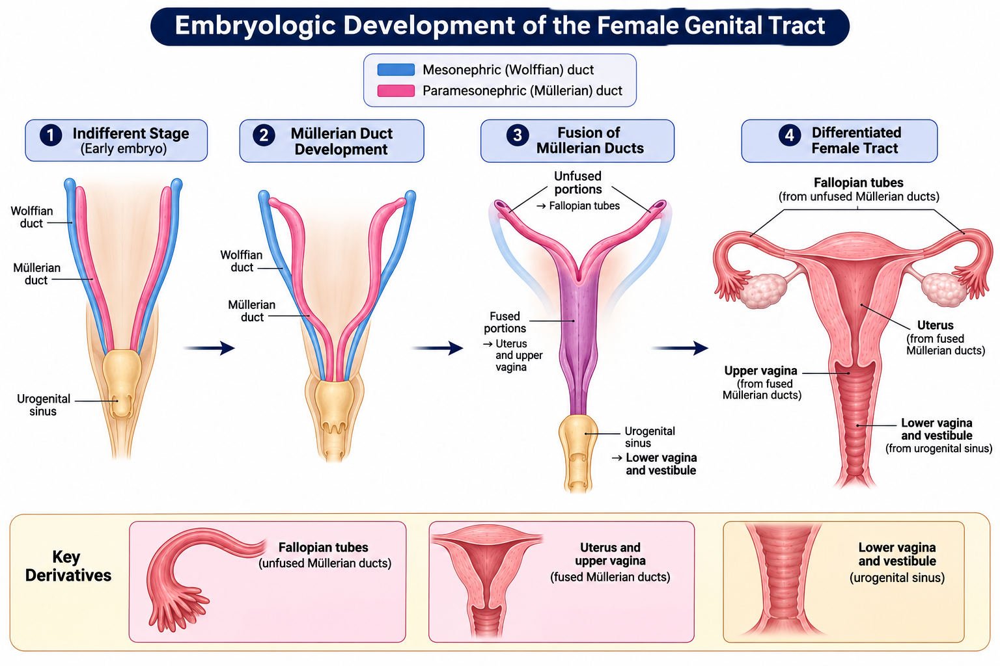
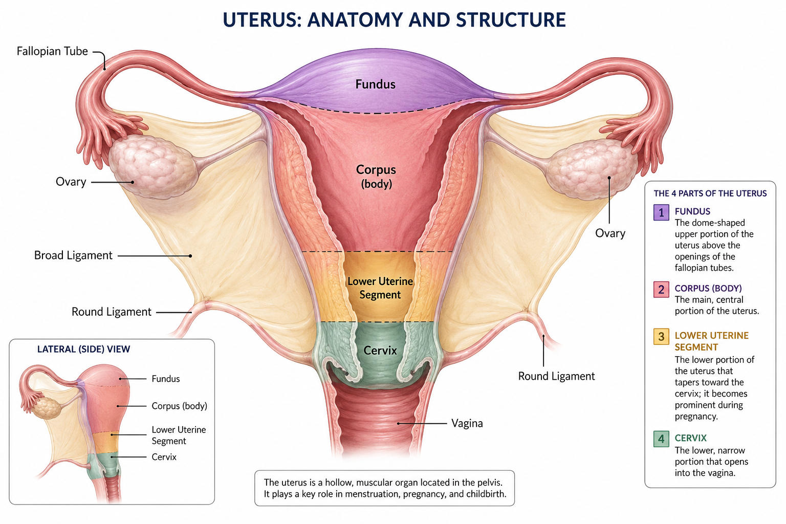
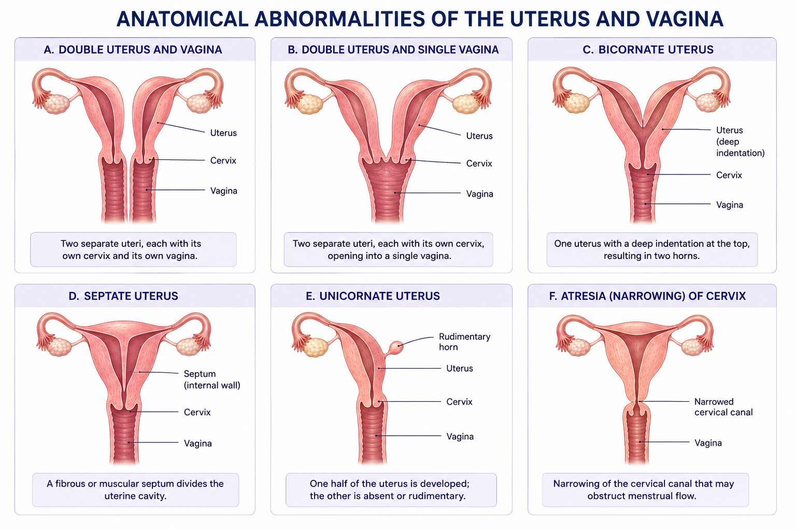
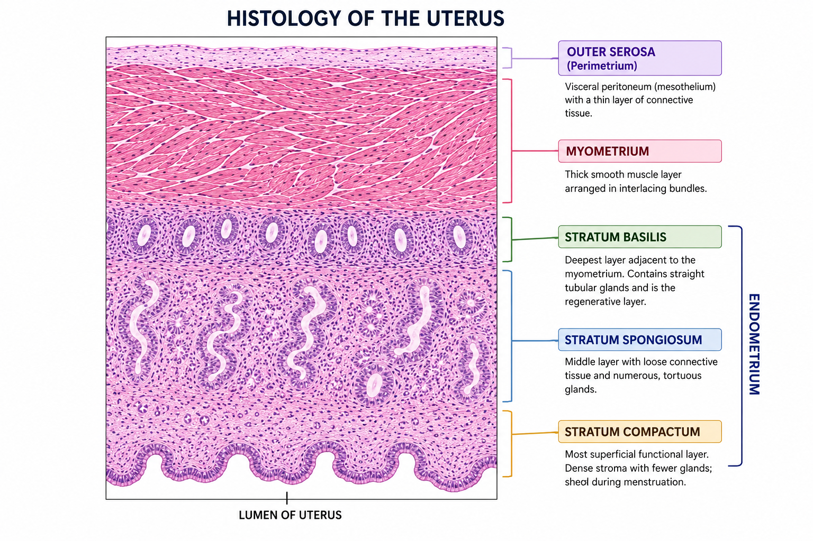
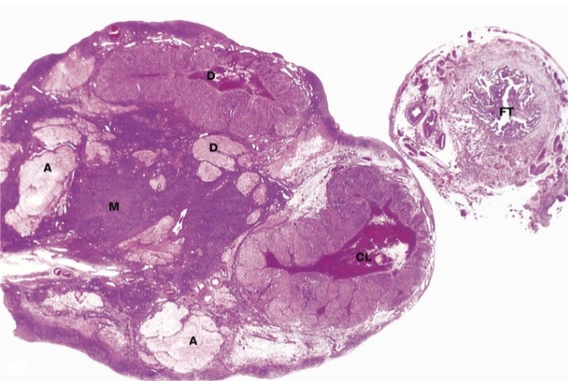

Anatomy, Physiology, Histology
Pap Testing
The Pap test is one of the most effective tests in medicine. It is simple, widely available and non-invasive, making it a success as a public health measure. It is responsible for a 70-80% reduction in mortality and morbidity from cervical cancer. Most successful in prevention of squamous cell carcinoma in middle-age women. Not as effective for adenocarcinoma, the second most common type. It is ineffective for other types of female genital tract cancers.
Limitations of Pap Testing
- Requires regular and repeat testing- disease can develop any time and may be fast growing
- Requires women to come in for testing- patients may be lost to follow up and not treated
- Sampling errors- area with lesion not sampled
- Locator errors- dependent on cytologists and pathologists
History of Pap Test
- Dr. Papanicolaou examined vaginal smears for reproductive endocrinology studies
- Published “Diagnosis of Uterine Cancer by the Vaginal Smear” in 1943
- 1954 “Atlas of Exfoliative Cytology”
- 1970-80s American Cancer Society and National Cancer Institute developed screening programs and cytotechnology education programs
- Original method sampled vaginal pool secretions containing exfoliated cells using pipettes and suction bulbs
- Cells were degenerated and poor quality
- Development of Ayre spatula scraped the cervix and smeared cells
- Evolution of liquid-based preparations in 1990s
- Computer-assisted screening developed in 2000s
- FDA approved primary high-risk HPV testing in 2014
Embryology
- Undifferentiated sexual duct ystem consists of:
- Mesonephric (Wolffian) ducts
- Paramesonephric (Mullerian) ducts
- Differentiation occurs due to testicular secretory products
- Wolffian ducts form male genitals
- Mullerian ducts form most of the female genital tract
- The primoridal ovarian germ cells arise in the wall of the yolk sac and migrate to the urogential ridge
- The mesothelium of the urogenital ridge proliferates and incorporates the germ cells, producing ovarian epithelium and stroma
- Germ cells are of endodermal origin
- Stroma is of mesodermal origin
- The fallopian tubes, uterus and upper vagina develop from Mullerian ducts
- Lateral Mullerian ducts develop from invagination and fusion in the mesothelium (aka coelomic lining epithelium)
- Unfused portions form fallopian tubes (oviducts)
- Caudal ends (posterior) fuse to form uterus and upper vagina
- Lining of the uterus (endometrium), fallopian tubes (endosalpinx) and ovarian surface are all derived from coelomic epithelium (mesothelium)
- Lining of upper vagina is of Mullerian origin and originally glandular, but changes in utero to squamous epithelium
- Remnants of the mesonephric system found within the lateral vagina wall are called Gartner cysts

Anatomy
- Female genital tract is comprised of:
- Vulva
- Vaginal canal
- Uterus and cervix (ecto and endo)
- Two fallopian tubes
- Two ovaries
- These are suspended by ligaments in the lower portion of the pelvic cavity

Ovaries
- At reproductive age, ovaries measure 3x2x1 cm
- Increase in size during pregnancy, decrease with atrophy
- Ovaries are covered by mesothelium (coelomic epithelium)
- Three layers of the ovary:
- Outer cortex: collagenous tunica albuginea, ovarian follicles produce estrogen
- Inner medulla: ovarian stromal tissue that secretes androstenedione and some testosterone
- Central hilus: ovarian stromal tissue surrounding epithelioid hilar cells that secrete androstenedione
Fallopian Tubes
- Fallopian tubes (oviducts) lined by 3 cell types:
- Ciliated columnar cells
- Secretory columnar cells
- Intercalated cells
Uterine Body
- Uterus measure 8x5x3 cm during reproductive age
- Lined by endometrium made of glandular tissue
- Tubes and ligaments are at the lateral ends
- Broad ligament laterally surrounds uterus and attaches to lateral pelvic wall
- Contains fallopian tubes at the top
- Round ligaments (muscular cords) run superior to inferior along pelvic wall
- These draw the uterus back after displacement (such as in pregnancy)
- Failure of ligaments results in prolapse or descensus (uterus forced down)
- Ligaments also support ovaries, cervix and vagina
- Uterine body consists of four main parts:
- Fundus or base
- Corpus or body
- Lower uterine segment
- Cervix or neck
Cervix
- Narrow lower part of uterus connecting it to the vagina
- Endocervical canal (portio supravaginalis) is channel through the cervix
- Internal os is where the canal meets uterine cavity at proximal junction
- External os is where the canal meets the vagina
- Ectocervix (portio vaginalis) is the portion of cervix lying the the vaginal canal
- Has anterior and posterior lips
- Protrustion into canal creates folds (fornices)
- Folds are anterior, lateral, posterior (which is the deepest)
- Exfoliated cells gather in folds (source of vaginal pool samples)
- Cervix is viewed with dilation (opening) with vaginal speculum
- Seen as thick, circular ring with external os at the center
- Before childbirth, ectocervical os is smooth and round, becomes transverse after birth
Vagina
- Vaginal canal is muscular and measures 7 cm
- Four layers:
- Outermost is composed of fat and few veins
- Next is a layer or smooth or nonstriated muscle
- Submucosa is next, layer of fatty elastic tissue with complex of veins
- Mucosa is innermost layer, made of non-keratinized stratified squamous epithelium
- This layer is sensitive to hormones
External Genitalia
- Commonly called vulva
- This is derived from mesodermal tissue
- Mons pubis is a diffuse midline elevation overlying pelvic bones
- Formed by fat pad below skin
- Labial folds are longitudinal skin folds on each side of the midline that run up to the mons pubis
- Labia majora are larger and lateral, fibrous and fatty, covered by skin
- Labia minora are smaller and medial, no fat and highly vascular, made of non-keratinized stratified squamous epithelium and stroma
- Perineum: area between labia majora and anus
- Vaginal vestibule cleft between labia minora
- Lower border has two large Bartholin’s glands, which secrete mucus
Anatomic Abnormalities

Histology
Uterine Body
- Uterine body has 3 layers:
- Outer serosa- contacts peritoneal lining
- Myometrium- 1.5 cm thick muscular layer
- Endometrium- Inner mucosa, thickness varies with hormonal cycle
Myometrium
- Myometrium is made up of smooth muscle and makes up the bulk of uterus
- There are transverse, longitudinal and oblique sections of muscles
- Intertwined by rich blood supply
- Increases during pregnancy
- Contracts under release of oxytocin from posterior pituitary gland during labor
Endometrium
- Varies in thickness, 1-5 m
- Thickness varies with hormonal cycle
- Made of pseudostratified ciliated columnar epithelial cells
- Cells form numerous simple tubular glands
- Glands are supported by stroma and produce glycogen
- Stratum basalis is adjacent to myometrium and not shed during menstruation
- Stratum spongiosum is a broad stromal spongy area
- Stratum compactum is thin and stromal in appearance

Endocervix
- Links the uterine cavity with the vaginal canal
- The cervix receives spermatozoa during fertilization
- Protects upper uterus from bacteria during pregnancy
- Composed of fibromuscular stroma
- Mucosal epithelium comprised of tunnels and furrows
- Single layer of columnar mucus secreting cells
- Mucus production governed by hormonal cycle
- During ovulation mucus is thin and watery
- During pregnancy mucus is thick and viscid, forming a mucus plug
Squamocolumnar junction
- Also called transformation zone (T-zone)
- Abrupt transition where glandular epithelium of endocervix and squamous of ectocervix meet
- Location varies with age and hormones, in puberty it is located at external os
- Ectropion (eversion): when endocervix is located at ectocervix
- During menopause it is higher in the canal
- Site of epithelium transformation and development of neoplasia
Ectocervix and Vaginal Walls
- Uterine cervix is fibromuscular and composed of cervical stroma
- Vaginal canal is covered by non-keratinized stratified squamous epithelium
- Thickness varies with age and hormonal status
- Four layers of squamous epithelium:
- Stratum cylindricum (or germinativum): basal cell, single layer
- Deep spinous layer: parabasal layer
- Superficial spinous layer: intermediate layer
- Stratum corneum: superficial layer
- Vaginal canal has layer of smooth muscle underneath stratified squamous layer
Fallopian Tubes
- Fimbriae: finger like projections from tubes that move ovum to tube
- Ovum move via peristalsis and flow of fluid
- Tube lined by ciliated columnar epithelium
- Ampulla is site of fertilization
- Mucosal folds in ampulla has 3 cell types: ciliated columnar cells, secretory cells, and intercalate cells ("peg cells", nourish sperm to promote fertilization)
Ovaries
- Two present, each almond shaped and sized
- Close to fimbriated ends of tubes, suspended from broad ligament
- Two zones: central medulla and outer cortex
- Fibrous capsule surrounds cortex
- Zone contains graafian follicles
- Younger women have numerous primordial follicles
- These contain ovum and are surrounded by follicle epithelium called granulosa
- Granulosa proliferates, forming several layers
- Ovum is located at one pole of granulosa cells: cumulus oophorus
- Stroma surrounds follicle and forms theca: layer of connective tissue
- Follicle begins to produce estrogen
- At ovulation, ovum alongside some granulosa cells is released to tubes
- Follicle collapses afterwards
- Granulosa cells modify and gain fatty tissue (corpus luteum) which produces progesterone and grows if pregnant
- Otherwise, dies and becomes scar called corpus albicans

References
- Author. Title of article. Journal Name. Year;Volume(Issue):Pages.
- Author. Title of second article. Journal Name. Year;Volume(Issue):Pages.